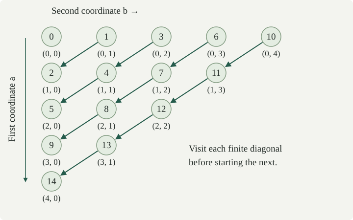

The set \(\{2,5,8\}\) has three elements because we can match its elements with three positions, using each position and each element exactly once. We make this idea precise with the bijective maps introduced earlier.
Throughout, \(\mathbb N=\{0,1,2,\ldots\}\). For \(n\in\mathbb N\), write
Thus \([0]=\varnothing\), \([1]=\{0\}\), and \([3]=\{0,1,2\}\). A set \(A\) is finite if there is a bijection \(e:[n]\to A\) for some \(n\in\mathbb N\). A set is infinite if it is not finite.
The bijection gives a list \(e(0),\ldots,e(n-1)\) containing each element once. The empty list gives the unique bijection \([0]\to\varnothing\); a singleton \(\{a\}\) is enumerated by \(e(0)=a\). For our three-element example, take \(e(0)=2\), \(e(1)=5\), and \(e(2)=8\).
We assume elementary arithmetic and ordinary induction on natural numbers: a statement holds for all \(n\) if it holds at zero and its truth at \(n\) implies its truth at \(n+1\). We also use that every nonempty subset of \(\mathbb N\) has a least member. To see this, take any member \(m\) and search the finite list \(0,\ldots,m\) for the first member of the subset.
If there is an injection \([m]\to[n]\), then \(m\le n\). Consequently, any map \([m]\to[n]\) with \(m>n\) sends two distinct inputs to the same output.
Proof
We prove the first assertion by induction on \(n\), allowing every \(m\). When \(n=0\), a map to \(\varnothing\) can only have empty domain, so \(m=0\).
Suppose the assertion holds for codomain \([n]\), and let \(f:[m]\to[n+1]\) be injective. If \(m=0\), the desired inequality holds. Otherwise remove the input \(m-1\) and its output \(b=f(m-1)\). Injectivity ensures that the remaining inputs map into \([n+1]\setminus\{b\}\). This codomain is in bijection with \([n]\): send \(y<b\) to \(y\), and \(y>b\) to \(y-1\). The inverse sends \(j<b\) to \(j\), and \(j\ge b\) to \(j+1\). Composing gives an injection \([m-1]\to[n]\). The induction hypothesis yields \(m-1\le n\), hence \(m\le n+1\).
For the consequence, a map with no repeated output would be injective, contradicting the first assertion. □
For example, any map from \(\{0,1,2,3\}\) to \(\{a,b,c\}\), where the three output labels are distinct, has a fiber containing at least two elements.
If \(e:[m]\to A\) and \(d:[n]\to A\) are bijections, then \(m=n\).
Proof
The inverse of \(d\) exists by the inverse-map theorem. Thus \(d^{-1}\circ e\) is a bijection \([m]\to[n]\), and its inverse is an injection \([n]\to[m]\). Applying in both directions gives \(m\le n\) and \(n\le m\), so \(m=n\). □
For finite \(A\), this unique number is its cardinality, written \(|A|\). In particular, \(|\varnothing|=0\) and \(|\{a\}|=1\). Changing the order of a list cannot change \(|A|\).
The natural numbers are infinite. If \(\mathbb N\) were in bijection with \([n]\), restricting the inverse enumeration to \([n+1]\subseteq\mathbb N\) would give an injection \([n+1]\to[n]\), contradicting .
Every subset of a finite set is finite. The image of a finite set under any map is finite.
Proof
Let \(e:[n]\to A\) be a bijection. For \(S\subseteq A\), scan the finite list \(e(0),\ldots,e(n-1)\) and retain exactly the terms lying in \(S\). The retained list contains each element of \(S\) exactly once. If it has \(r\) terms, it gives a bijection \([r]\to S\), including \(r=0\).
For a map \(f:A\to B\), scan \(f(e(0)),\ldots,f(e(n-1))\) and retain a term only when its value has not already occurred. Every element of \(f(A)\) occurs in the original list, so the retained list contains each image value exactly once. It enumerates \(f(A)\). □
For a finite set \(A\), a map \(f:A\to A\) is injective if and only if it is surjective.
Proof
Use a bijection \([n]\to A\) to replace \(f\) by a map \(g:[n]\to[n]\). If \(n=0\), the unique map is both injective and surjective. If \(n>0\) and \(g\) is injective but misses \(b\), relabel \([n]\setminus\{b\}\) as \([n-1]\) as in . This gives an injection \([n]\to[n-1]\), a contradiction. Thus an injective \(g\) is surjective.
Now suppose \(g\) is surjective. For each \(y\in[n]\), let \(s(y)\) be the least input with \(g(s(y))=y\). The map \(s:[n]\to[n]\) is injective: equal chosen inputs have equal outputs under \(g\). By the direction just proved, \(s\) is surjective. If \(g(x)=g(x')\), write \(x=s(y)\) and \(x'=s(y')\). Then \(y=y'\), hence \(x=x'\). So \(g\) is injective. Transferring along the bijection proves both directions for \(f\). □
The finiteness hypothesis matters. The successor map \(n\mapsto n+1\) on \(\mathbb N\) is injective but misses zero. The map \(p(0)=0\), \(p(n+1)=n\) is surjective, because \(p(n+1)=n\), but not injective, because \(p(0)=p(1)=0\).
A set \(A\) is countably infinite if there is a bijection \(e:\mathbb N\to A\). It is countable if it is finite or countably infinite. Thus the empty set is countable.
A bijection from \(\mathbb N\) supplies an enumeration
in which every element appears exactly once. Such a set is infinite: a bijection with a finite set would make \(\mathbb N\) finite, contradicting .
A general sequence \(a_0,a_1,\ldots\) may repeat values. It is a map \(\mathbb N\to A\); it lists all of \(A\) precisely when it is surjective. Surjectivity alone does not make it an enumeration without repetitions. We will prove when such lists exist and how repetitions can be removed.
Here, having an enumeration is an existence statement. We do not require an algorithm that decides membership or calculates the terms.
Every infinite subset \(S\subseteq\mathbb N\) has an enumeration in increasing order.
Proof
Take \(r_0\) to be the least member of \(S\). After choosing \(r_0,\ldots,r_k\), take \(r_{k+1}\) to be the least member not yet chosen. A new member always exists: otherwise \(S\) would be the finite set of chosen terms. The sequence is strictly increasing, since at each stage all smaller members of \(S\) have already been chosen.
For surjectivity, fix \(s\in S\). If \(s\) never appeared, it would remain available at every stage, so every selected term would be smaller than \(s\). In particular, \(r_0,\ldots,r_s\) would be \(s+1\) distinct members of \([s]\), contradicting . Thus each \(s\) occurs. Strict increase gives injectivity, so \(k\mapsto r_k\) is a bijection. □
A set \(A\) is countable if and only if there is an injective map \(c:A\to\mathbb N\).
We call such a map an encoding: distinct elements receive distinct natural-number codes. Not every natural number needs to be used.
Proof
If \(A\) is finite, invert a bijection \([n]\to A\) and then include \([n]\) in \(\mathbb N\). If \(A\) is countably infinite, invert its enumeration. Both constructions give injections into \(\mathbb N\), including the empty-domain case.
Conversely, let \(c:A\to\mathbb N\) be injective. With codomain restricted to its image \(S=c(A)\), it is a bijection \(A\to S\). If \(S\) is finite, transfer a finite enumeration of \(S\) back to \(A\) using \(c^{-1}\). If \(S\) is infinite, supplies a bijection \(\mathbb N\to S\); compose it with \(c^{-1}\) to enumerate \(A\). Thus \(A\) is countable in either case. □
A nonempty set \(A\) is countable if and only if there is a surjection \(f:\mathbb N\to A\).
Proof
Suppose \(A\) is countable. Choose an encoding \(c:A\to\mathbb N\) from and one element \(a_*\in A\). Define \(f(n)\) to be the unique \(a\) with \(c(a)=n\) when such an element exists, and \(a_*\) otherwise. For each \(a\in A\), we have \(f(c(a))=a\), so \(f\) is surjective.
Conversely, suppose \(f:\mathbb N\to A\) is surjective. Define
The minimum exists because every fiber is nonempty. If \(c(a)=c(b)\), applying \(f\) gives \(a=b\). Thus \(c\) is an encoding, and proves countability. □
This also explains how to remove repetitions. The set of first-occurrence indices \(I=c(A)\subseteq\mathbb N\) contains exactly one index for each value. If \(A\) is infinite, then \(I\) is infinite, since \(f(I)=A\) and a finite image would be finite. Enumerate \(I\) increasingly by and apply \(f\) to those indices. Every value appears exactly once, in the order of its first occurrence.
Can \(\varnothing\) be the image of a map from \(\mathbb N\)? Can a finite nonempty set be the image of such a map? Does a list containing every member of a set have to be injective?
No map \(\mathbb N\to\varnothing\) exists: the input zero would need an output. This is the same obstruction as in the empty-codomain question. The empty set is countable, but the surjective-list characterization requires nonemptiness.
If \(A\) is nonempty and finite, take a bijection \(e:[r]\to A\) with \(r>0\). The periodic list \(f(n)=e(n\bmod r)\), where \(n\bmod r\) is the remainder on division by \(r\), is surjective. For \(A=\{a\}\), it is the constant list \(a,a,a,\ldots\).
A list need not be injective even when its image is infinite. The map \(f(n)=\lfloor n/2\rfloor\) gives \(0,0,1,1,2,2,\ldots\) and is surjective onto \(\mathbb N\), but \(f(0)=f(1)\). Here the floor takes the integer part. Keeping first occurrences gives the usual enumeration \(0,1,2,\ldots\).
The sets \(P=\{1,2,3,\ldots\}\) and \(E=\{0,2,4,\ldots\}\) are countably infinite.
Proof
The map \(u:\mathbb N\to P\), \(u(n)=n+1\), is injective by cancellation of one. Each \(p\in P\) has the preimage \(p-1\in\mathbb N\), proving surjectivity.
The map \(v:\mathbb N\to E\), \(v(n)=2n\), is injective by cancellation of two. Every \(e\in E\) equals \(2k\) for some \(k\in\mathbb N\), giving surjectivity. Thus both maps are bijections. □
The set \(E\) is the even set defined earlier. It is a proper subset of \(\mathbb N\), since it misses one, yet it is in bijection with \(\mathbb N\). The codomain matters: \(n\mapsto2n\) is onto \(E\), but not onto \(\mathbb N\).
Define \(z:\mathbb N\to\mathbb Z\) by
Every natural number is uniquely even or odd, so the rule specifies one value for every input. It produces
The map \(z\) is a bijection, so \(\mathbb Z\) is countably infinite.
Proof
A nonnegative integer \(k\) occurs at input \(2k\). A negative integer has the unique form \(-(k+1)\) with \(k\in\mathbb N\), and occurs at input \(2k+1\). This proves surjectivity. Values from even inputs are nonnegative, and values from odd inputs are negative, so equality of outputs forces the inputs to have the same parity. In either case the displayed formulas force the corresponding \(k\)'s, and hence the inputs, to be equal. □
If \(A\) is countable, every subset \(S\subseteq A\) is countable, and the image \(f(A)\) under any map \(f:A\to B\) is countable. If \(A\) and \(B\) are in bijection, one is countable if and only if the other is.
Proof
Take an encoding \(c:A\to\mathbb N\). Its restriction to \(S\) is injective, so applies to \(S\).
For each \(y\in f(A)\), the set of codes
is nonempty. Assign \(d(y)=\min C_y\). If \(d(y)=d(y')\), this code belongs to both sets, so it equals \(c(a)=c(a')\) for inputs with \(f(a)=y\) and \(f(a')=y'\). Injectivity of \(c\) gives \(a=a'\), hence \(y=y'\). Thus \(d\) encodes \(f(A)\). This argument also covers \(A=\varnothing\), when there are no image elements to encode.
Finally, for a bijection \(b:A\to B\), the map \(c\circ b^{-1}\) encodes \(B\). Reversing the bijection proves the converse. □
Images can be finite even when the domain is countably infinite: a constant map on \(\mathbb N\) has a singleton image. The conclusion is countability, not infinitude.
If \(A\) and \(B\) are countable subsets of a common set, then \(A\cup B\) is countable. More generally, a union of finitely many countable sets is countable.
Proof
Fix encodings \(c:A\to\mathbb N\) and \(d:B\to\mathbb N\). For \(x\in A\cup B\), define
In the second case \(x\in B\), so \(d(x)\) is defined. Equal codes cannot come from different cases, because even and odd numbers differ. Within each case, equality and cancellation give equality of inputs by injectivity of \(c\) or \(d\). Thus \(h\) is injective. Elements in \(A\cap B\) use the first case, so overlap causes no ambiguity.
For a finite family \(A_0,\ldots,A_{r-1}\), induct on \(r\). At \(r=0\), the union is empty and countable. At the next step, take the union of the previous union with \(A_r\) and apply the binary case. □
The set \(\mathbb N\times\mathbb N\) is countably infinite. Visit the pairs in order of their sum, and within each diagonal increase the first coordinate:

Proof
Let \(T_0=0\) and \(T_{s+1}=T_s+s+1\). The number \(T_s\) counts the pairs on diagonals with sum smaller than \(s\), since these diagonals have lengths \(1,2,\ldots,s\). In particular, \(T_s=s(s+1)/2\), as induction on \(s\) verifies.
Assign the pair \((a,b)\), on diagonal \(s=a+b\), the position
The diagonal with sum \(s\) occupies exactly the consecutive positions \(T_s,T_s+1,\ldots,T_s+s\). The next diagonal starts at \(T_{s+1}=T_s+s+1\), so these intervals do not overlap and leave no gaps.
More explicitly, for every \(n\in\mathbb N\) there is a unique \(s\) satisfying \(T_s\le n<T_{s+1}\). Existence follows by taking the largest \(s\) with \(T_s\le n\): there is at least \(s=0\), and \(T_s\ge s\) bounds such indices by \(n\). Strict increase of \(T_s\) gives uniqueness. Put \(a=n-T_s\) and \(b=s-a\). The inequalities give \(0\le a\le s\), so \((a,b)\) is a pair of natural numbers, and \(P(a,b)=n\).
Conversely, the code of a pair determines its unique diagonal and then its first coordinate; the second coordinate is the sum minus the first. Thus \(P\) is injective as well as surjective. Its inverse \(\delta:\mathbb N\to\mathbb N\times\mathbb N\) is the displayed enumeration. □
The pair \((a,b)\) appears after exactly \(T_{a+b}+a\) earlier pairs, a finite number. This is why each pair is eventually reached.
Would listing \((0,0),(0,1),(0,2),\ldots\) and then starting the row with first coordinate one enumerate all pairs? Where does \((2,3)\) appear in the diagonal enumeration?
Finishing the first row takes all natural-number positions. There is no position after every \(n\in\mathbb N\) at which to start the second row. The resulting sequence never reaches \((1,0)\), so it is not surjective onto \(\mathbb N\times\mathbb N\).
For \((2,3)\), the diagonal sum is five. By \eqref{eq:pair-code}, its position is \(T_5+2=15+2=17\). Positions start at zero, so it is the eighteenth pair.
If \(A\) and \(B\) are countable, then \(A\times B\) is countable. If both are countably infinite, their product is countably infinite. Every product of finitely many countable sets is countable.
Proof
Fix encodings \(c:A\to\mathbb N\) and \(d:B\to\mathbb N\). Using the pair code from , define
If two values of \(h\) agree, injectivity of \(P\) makes both coordinate codes agree. Injectivity of \(c\) and \(d\) then makes the pairs equal. Thus \(h\) is an encoding. If either factor is empty, the product and its encoding have empty domain, and the same argument applies.
If \(e:\mathbb N\to A\) and \(f:\mathbb N\to B\) are bijections, then \((i,j)\mapsto(e(i),f(j))\) is a bijection from \(\mathbb N^2\) onto \(A\times B\), with inverse \((a,b)\mapsto(e^{-1}(a),f^{-1}(b))\). Compose it with \(\delta\) to enumerate the product.
Induction gives the assertion for finitely many factors. The product of zero factors is the singleton \(\{()\}\) containing the empty tuple, so it is finite. Adding one factor forms a binary product with the previous product. For example, \(\mathbb N^r\) is countable for every \(r\in\mathbb N\), and countably infinite for \(r\ge1\). For \(r=1\), use the identity enumeration; for \(r>1\), use the binary construction repeatedly. □
A rational number is a number representable as \(p/q\), where \(p\in\mathbb Z\) and \(q\) is a positive integer. Write \(\mathbb Q\) for the set of these numbers. Different fractions can represent the same number: \(1/2=2/4\), for example. The set \(\mathbb Q\) is countably infinite.
Proof
Both \(\mathbb Z\) and \(\mathbb N\) are countable, so makes \(\mathbb Z\times\mathbb N\) countable. The map
is surjective: for \(p/q\) with \(q>0\), use the input \((p,q-1)\). Thus \(\mathbb Q=F(\mathbb Z\times\mathbb N)\) is countable by .
The rational numbers contain an infinite subset \(\{0/1,1/1,2/1,\ldots\}\), in bijection with \(\mathbb N\). If \(\mathbb Q\) were finite, this subset would be finite by , making \(\mathbb N\) finite. Therefore \(\mathbb Q\) is infinite, hence countably infinite.
For an explicit list with repetitions, write \(\delta(n)=(a_n,b_n)\) using , and set
where \(z\) is the integer enumeration from . Every \(p/q\) occurs: take the unique \(a\) with \(z(a)=p\), and use the pair \((a,q-1)\), which appears at a finite position. The list begins
Keeping first occurrences as in gives an enumeration without repetitions. There are infinitely many retained values, and each rational's first occurrence has only finitely many earlier positions, so each rational is eventually retained. □
This list orders the numbers by their occurrence in a traversal of representations, not by numerical size. Fractions are names for rational numbers; equality of values determines which repetitions to discard. The distinction between a representative and what it represents also appears in the quotient discussion.
What are the first five distinct values in the list \(q_n\)? At which position does the representation \(2/3\), using numerator two and denominator three, occur? Could a strictly increasing sequence enumerate all of \(\mathbb Q\)?
The first five distinct values are \(0,-1,-1/2,1,-1/3\), at original positions \(0,2,4,5,7\). The intervening zeroes repeat the value already retained at position zero.
Since \(z(4)=2\), the specified representation uses the pair \((4,2)\). Its position is \(P(4,2)=T_6+4=21+4=25\). This identifies one occurrence of \(2/3\); the list also visits other representations of the same value.
No strictly increasing sequence beginning at \(r_0\in\mathbb Q\) can enumerate all rationals: every term is at least \(r_0\), so \(r_0-1\) is missed. Countability does not require increasing numerical order.
For countable sets, describe \(\varnothing\times\mathbb N\), \(\{a\}\times\mathbb N\), and the product of zero factors. Can a subset or image of a countably infinite set be finite? If \(A\) is countably infinite and \(B\) is nonempty and countable, is \(A\times B\) countably infinite?
The product \(\varnothing\times\mathbb N\) is empty: there is no first coordinate. The map \(n\mapsto(a,n)\) is a bijection \(\mathbb N\to\{a\}\times\mathbb N\), with inverse projection onto the second coordinate. The zero-factor product is \(\{()\}\), which has one element. It differs from a product with an empty factor.
A subset can be finite, as \(\{0\}\subseteq\mathbb N\) shows. An image can be finite, as the constant map \(n\mapsto0\) shows. The image need not be empty; a map from nonempty \(\mathbb N\) always has at least its value at zero.
For the last question, gives countability. Fix \(b\in B\). The subset \(A\times\{b\}\) is in bijection with \(A\) by \(a\mapsto(a,b)\). If \(A\times B\) were finite, its subset \(A\times\{b\}\) would be finite by , contradicting infinitude of \(A\). Thus the product is countably infinite.